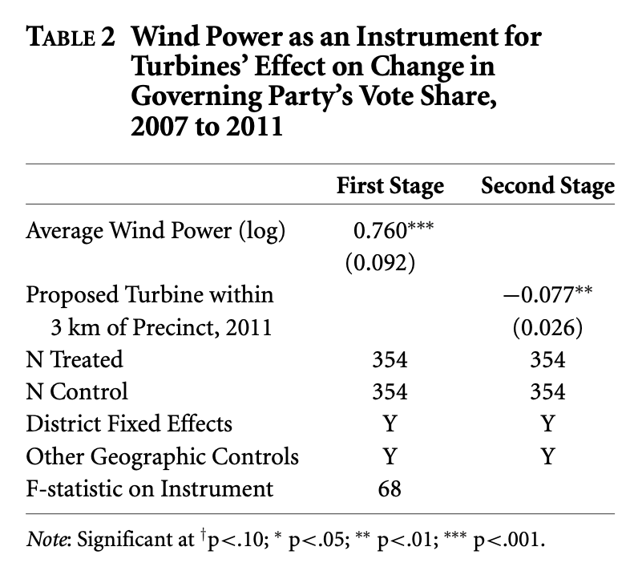
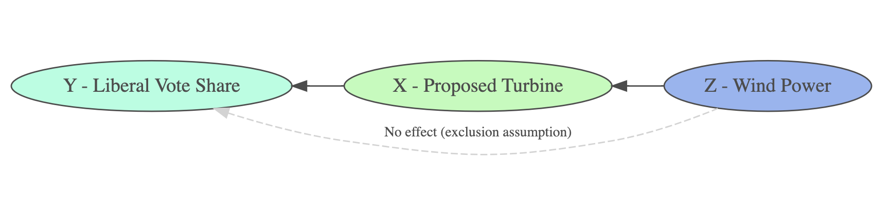

library(tidyverse)
library(janitor)
library(here)
library(gt)
library(gtsummary)
library(jtools)
library(AER) # 2SLS
library(MatchIt) # Matching
library(cobalt) # Balance & love plots
library(DiagrammeR) # Path diagrams🌬️🍃 Week 8 Lab: Matching & Instrumental Variable Estimation
A replication of IV analyses from study:
Stokes (2015): “Electoral Backlash against Climate Policy: A Natural Experiment on Retrospective Voting and Local Resistance to Public Policy.
- Study: https://doi.org/10.1111/ajps.12220
- Data source: Dataverse-Stokes2015
Setup - Load libraries & data
clean_data <- read_csv(here("data", "stokes15_ivdata.csv")) %>%
mutate(across(c(precinct_id, district_id), as.factor))Intuition check - Why match?
clean_data %>%
select(proposed_turbine_3km, log_home_val_07, p_uni_degree, log_median_inc, log_pop_denc) %>%
tbl_summary(
by = proposed_turbine_3km,
statistic = list(all_continuous() ~ "{mean} ({sd})")) %>%
modify_header(label ~ "**Variable**") %>%
modify_spanning_header(c("stat_1", "stat_2") ~ "**Treatment**")| Variable |
Treatment
|
|
|---|---|---|
| 0 N = 5,6191 |
1 N = 3541 |
|
| log_home_val_07 | 12.26 (0.37) | 12.29 (0.29) |
| p_uni_degree | 0.17 (0.12) | 0.13 (0.09) |
| log_median_inc | 10.32 (0.22) | 10.31 (0.19) |
| log_pop_denc | 5.12 (2.40) | 3.54 (1.78) |
| 1 Mean (SD) | ||
What type of data do I need for matching?
- Multiple covariates/controls (wide data)
- Extra control observations (large comparison group)
Tip
Be cautious when choosing controls to avoid accidentally controlling away the treatment effect!
The rationale for matching as described in Stokes, 2015:
“Using matching to preprocess the data before using an instrumental variable estimator may strengthen the instrument and correct for biases from confounders if the instrument departs from as-if random assignment (Keele and Morgan 2013).
[…]
Mahalanobis distance matching was first used to pair each treated unit with a control unit based on observable characteristics. The data were balanced on four variables: the average home price pretreatment in 2006 (log), the population with a university degree (%), median income (log), and population density (log).”
Conduct matching estimation using the {MatchIt} 📦
- Approximate Mahalanobis matching method used in Stokes (2015)
- Introduce another very common matching approach called
propensity score matching
set.seed(02252025)
match_model <- matchit(
proposed_turbine_3km ~ # TREATMENT
log_home_val_07 + p_uni_degree + log_median_inc + log_pop_denc, # Pre-treatment covariates
data = clean_data,
method = "nearest", # Nearest neighbor matching
distance = "mahalanobis", # Mahalanobis distance
ratio = 1, # Match one control unit to each treatment (1-to-1 matching)
replace = FALSE # Control obs. are not replaced
)
# Extract matched data
matched_data <- match.data(match_model)summary(match_model)❤️ ️Create a “love plot” using love.plot()
- Plot mean differences for data before & after matching across all pre-treatment covariates
- This is an effectives way to evaluate pre-treatment balance!
new_names <- data.frame(
old = c("log_home_val_07", "p_uni_degree", "log_median_inc", "log_pop_denc"),
new = c("Home Value (log)", "Percent University Degree", "Median Income (log)", "Population Density (log)"))
# Love plot
love.plot(match_model, stats = "mean.diffs",
thresholds = c(m = 0.1),
var.names = new_names)
Propensity score matching
propensity_scores <- matchit(
proposed_turbine_3km ~
log_home_val_07 + p_uni_degree + log_median_inc + log_pop_denc,
data = clean_data,
method = "nearest", # Nearest neighbor matching
distance = "logit", # Propensity scores estimated with logistic regression
ratio = 1, # Match one control unit to each treatment (1-to-1 matching)
replace = FALSE # Control obs. are not replaced
)Create table displaying covariate balance using cobalt::bal.tab()
bal.tab(propensity_scores,
var.names = new_names)Balance Measures
Type Diff.Adj
distance Distance 0.0001
log_home_val_07 Contin. 0.0205
p_uni_degree Contin. 0.0457
log_median_inc Contin. -0.0042
log_pop_denc Contin. -0.0365
Sample sizes
Control Treated
All 5619 354
Matched 354 354
Unmatched 5265 0Simulate matching in 241 - Find your counterfactual!
Covariates:
Hair color: Black, Brown, Blonde, Red
Eye color: Brown, Blue, Green, Hazel
Handedness: Right-handed, Left-handed
An ‘exact’ match = Someone who is matching on all 3 covariates. Find your closest match!
Instrumental Variable Estimation: Two-Stage Least Squares (2SLS)
First stage: Regress the treatment (\(X\)) on the instrument (\(Z\))
\[X_i = \alpha_0 + \alpha_1 Z_i + \mu_i\]
Fitted regression notation: (\(\hat{X}_i\)) indicates predicted values (i.e., hat \(\widehat{symbol}\))
\[\hat{X}_i = \hat{\alpha_0} + \hat{\alpha_1} Z_i\]
Second stage: Regress the outcome (\(Y\)) on the fitted values from the 1st stage (\(\hat{X}_i\))
\[Y_i = \beta_0 + \beta_1 \hat{X}_i + \epsilon_i\]
Replicating IV estimator in Stokes (2015) - “Table 2”

The 2SLS step-wise procedure
Step 1. Estimate the first stage regression equation
\[ProposedTurbine_i = \beta_0 + \beta_1 WindPower_i + ControlVariables... + \epsilon_i\] #### Control variables included in 1st & 2nd stage regressions:
- Distance to lakes
- District fixed effects
- Flexible geographic controls
“Geographic controls, in both the first and second stage, included longitude, latitude, both variables squared, and their interaction.” (Stokes, 2015).
first_stage <- lm(proposed_turbine_3km ~ # TREATMENT
log_wind_power + # INSTRUMENT
mindistlake + mindistlake_sq + # CONTROLS
longitude + latitude + long_sq + lat_sq + long_lat + # GEOGRAPHIC CONTROLS
district_id, # FIXED EFFECT
data=matched_data)
export_summs(first_stage, digits = 3, model.names = c("First stage: Prpoposed Turbine 3km"),
coefs = c("(Intercept)", "log_wind_power") ) | First stage: Prpoposed Turbine 3km | |
|---|---|
| (Intercept) | 15.027 |
| (74.243) | |
| log_wind_power | 0.711 *** |
| (0.092) | |
| N | 708 |
| R2 | 0.419 |
| *** p < 0.001; ** p < 0.01; * p < 0.05. | |
Check 1st stage for relevance - to make sure your instrument is not weak 🤕
General rule of thumb: F-statistic > 10 is considered a relevant instrument (Stock, Wright, & Yogo, 2020)
# `summary(first_stage)` # Includes the F-statistic at the bottom of long output table
summary(first_stage)$fstatistic value numdf dendf
14.70538 33.00000 674.00000 Step 2. Save predicted values \(\hat{X}_i\) from first stage
matched_data$proposed_turbine_3km_HAT <- predict(first_stage, newdata = matched_data)Step 3. Estimate the second stage regression
\[LiberalVoteShare_i = \beta_0 + \beta_1 \widehat{ProposedTurbine}_i + ControlVariables... + \epsilon_i\]
second_stage <- lm(change_liberal ~ # OUTCOME
proposed_turbine_3km_HAT + # PREDICTED VALUES OF X (LATE)
mindistlake + mindistlake_sq +
longitude + long_sq + latitude + lat_sq + long_lat +
district_id,
data = matched_data)
export_summs(second_stage, digits = 3, model.names = c("Second stage: Change in Liberal Vote Share"),
coefs = c("(Intercept)", "proposed_turbine_3km_HAT") ) | Second stage: Change in Liberal Vote Share | |
|---|---|
| (Intercept) | 16.966 |
| (15.432) | |
| proposed_turbine_3km_HAT | -0.065 * |
| (0.027) | |
| N | 708 |
| R2 | 0.586 |
| *** p < 0.001; ** p < 0.01; * p < 0.05. | |
Local Average Treatment Effect (LATE)
The treatment effect for the complier group 🎟️ → 🍕
Recall that the 2SLS estimator estimates the LATE
Given that all of the identifying assumptions hold:
Instrument relevance( the instrument is strong 💪 )Exclusion assumption( No Z on Y except through X ⛔️ )Ignorability( Z is ‘as if random’ with respect to Y 🎲 )Monotonicity( Nodefiers🙃 )
Asssuming 1-4 2SLS will consistently return the LATE (i.e., the treatment effect among compliers)
Compliers= Participants who were encouraged by the instrument (🎟) to take the treatment (🍕)
Illustrate the exclusion assumption using {DiagrammeR}
grViz("
digraph path_diagram {
# Graph layout settings
rankdir = LR; # Left-to-right layout
# Node definitions
node [shape = ellipse, style = filled, fillcolor = AquaMarine]
Y_LiberalVoteShare [label = 'Y - Liberal Vote Share']
node [shape = ellipse, style = filled, fillcolor = PaleGreen]
X_ProposedTurbine [label = 'X - Proposed Turbine']
node [shape = ellipse, style = filled, fillcolor = CornFlowerBlue]
Z_WindPower [label = 'Z - Wind Power']
# Reversed Edges (Directed Arrows)
X_ProposedTurbine -> Z_WindPower [dir = back]
Y_LiberalVoteShare -> X_ProposedTurbine [dir = back]
Y_LiberalVoteShare -> Z_WindPower [label = 'No effect (exclusion assumption)',
fontsize=10, style = dashed, color = gray, constraint = false, dir = back]
}
")
Estimate 2SLS using ivreg() from {AER}
Syntax for specify 2SLS using ivreg():
ivreg( Y ~ X | Z , data )
fit_2sls <- ivreg(change_liberal ~ # OUTCOME
proposed_turbine_3km + # TREATMENT
mindistlake + mindistlake_sq + # CONTROLS
longitude + long_sq + latitude + lat_sq + long_lat + # CONTROLS
district_id | # FIXED EFFECT
log_wind_power + # INSTRUMENT
mindistlake + mindistlake_sq + # CONTROLS REPEATED...
longitude + long_sq + latitude + lat_sq + long_lat +
district_id,
data = matched_data)
summary(fit_2sls)
Call:
ivreg(formula = change_liberal ~ proposed_turbine_3km + mindistlake +
mindistlake_sq + longitude + long_sq + latitude + lat_sq +
long_lat + district_id | log_wind_power + mindistlake + mindistlake_sq +
longitude + long_sq + latitude + lat_sq + long_lat + district_id,
data = matched_data)
Residuals:
Min 1Q Median 3Q Max
-0.3603355 -0.0479715 0.0006369 0.0509007 0.2750431
Coefficients:
Estimate Std. Error t value Pr(>|t|)
(Intercept) 1.697e+01 1.574e+01 1.078 0.281383
proposed_turbine_3km -6.539e-02 2.742e-02 -2.384 0.017381 *
mindistlake 1.564e-03 5.087e-04 3.074 0.002199 **
mindistlake_sq -1.784e-05 4.441e-06 -4.016 6.58e-05 ***
longitude -1.499e-01 3.136e-01 -0.478 0.632787
long_sq -2.469e-03 2.006e-03 -1.230 0.218973
latitude -1.077e+00 5.739e-01 -1.876 0.061025 .
lat_sq 7.048e-03 6.578e-03 1.071 0.284350
long_lat -5.789e-03 3.825e-03 -1.513 0.130663
district_id10 2.995e-01 5.112e-02 5.859 7.30e-09 ***
district_id14 4.630e-02 7.458e-02 0.621 0.534886
district_id18 1.758e-01 6.372e-02 2.759 0.005947 **
district_id19 2.145e-01 6.371e-02 3.367 0.000804 ***
district_id21 -5.027e-02 7.222e-02 -0.696 0.486615
district_id22 3.518e-03 7.835e-02 0.045 0.964198
district_id28 1.616e-01 7.065e-02 2.287 0.022498 *
district_id29 2.386e-01 6.114e-02 3.903 0.000105 ***
district_id34 1.451e-01 5.772e-02 2.514 0.012161 *
district_id36 2.229e-01 9.010e-02 2.474 0.013588 *
district_id40 7.669e-02 6.777e-02 1.132 0.258218
district_id41 1.718e-01 8.254e-02 2.081 0.037797 *
district_id42 1.776e-01 9.401e-02 1.889 0.059257 .
district_id55 1.980e-01 7.017e-02 2.822 0.004914 **
district_id58 1.511e-01 7.002e-02 2.157 0.031337 *
district_id67 1.350e-01 7.040e-02 1.918 0.055533 .
district_id69 8.231e-02 4.923e-02 1.672 0.094973 .
district_id70 1.381e-01 6.473e-02 2.133 0.033286 *
district_id73 1.392e-01 7.247e-02 1.920 0.055257 .
district_id85 1.518e-01 5.186e-02 2.928 0.003523 **
district_id87 1.317e-01 1.095e-01 1.203 0.229343
district_id90 -3.282e-02 1.396e-01 -0.235 0.814148
district_id91 -1.173e-01 1.280e-01 -0.916 0.359736
district_id98 2.094e-01 7.557e-02 2.771 0.005748 **
district_id105 1.131e-01 6.646e-02 1.702 0.089206 .
---
Signif. codes: 0 '***' 0.001 '**' 0.01 '*' 0.05 '.' 0.1 ' ' 1
Residual standard error: 0.08245 on 674 degrees of freedom
Multiple R-Squared: 0.5696, Adjusted R-squared: 0.5485
Wald test: 27.81 on 33 and 674 DF, p-value: < 2.2e-16 [1] "HUZZAH! 🚀 Great work 241 - You are phenomenal! 💫"
---------
< The End >
---------
\
\
__
/o \
<= | ==
|__| /===
| \______/ =
\ ==== /
\__________/ [ab]